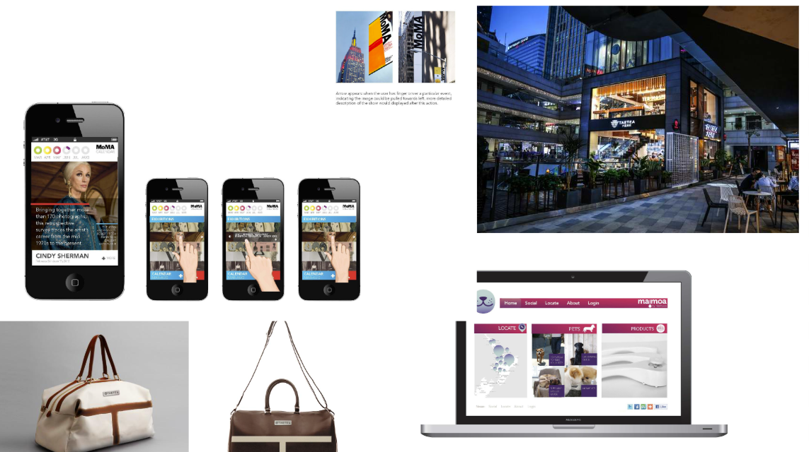

My projects cover a wide range of digital technology areas. These include app design, web design, game design, and AR and VR experiences. I enjoy working on projects that combine creativity with problem solving.

| Project Type | Description | Example Tools |
|---|---|---|
| App Design | Designing and building simple applications that solve real world problems and support user needs. | Swift, Python |
| Web Design | Creating multi page websites using HTML and basic structure to present information clearly and effectively. | HTML, JavaScript |
| Game Design | Developing games that include player controls, scoring systems, and clear game rules. | Unity, Construct |
| AR and VR Design | Exploring augmented reality and virtual reality experiences to create immersive digital environments. | Unity, VR Headsets |
Many of these projects are used as teaching examples to help students understand the digital development process from planning to testing and refinement.